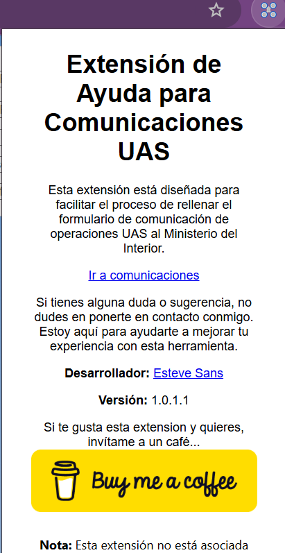
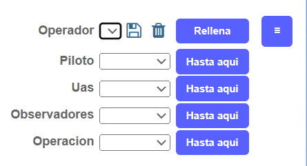
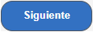
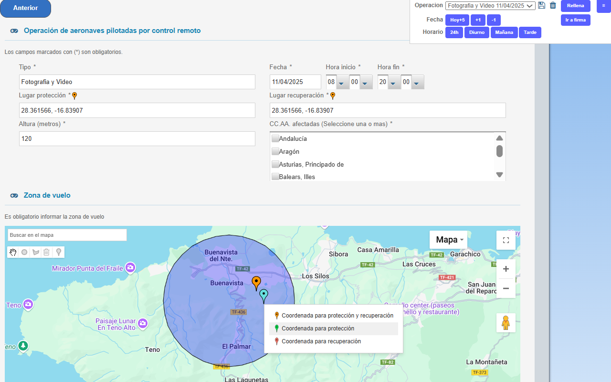
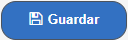
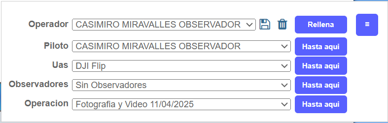
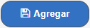

<!DOCTYPE html>
<html lang="es"></html>
<head>
    <meta charset="UTF-8">
    <meta name="viewport" content="width=device-width, initial-scale=1.0">
    <link rel="stylesheet" href="css/styles.css">
    <title>Acerca de Mi Extensión</title>
</head>
<body>
    <script>
        function toggleVisibility(divId) {
            const div = document.getElementsByName(divId)[0];
            if (div.style.display === "none" || div.style.display === "") {
                div.style.display = "block";
            } else {
                div.style.display = "none";
            }
        }
    </script>
    <header>
        <h1>Acerca de Extensión Comunicación al Interior de Operaciones UAS Fáciles</h1>
    </header>
    <main>
        <div style="margin:50px">
            <section>
                <h2>Descripción de la Extensión</h2>
                <p>Esta extensión permite guardar los datos de cada pestaña del formulario, de una manera fácil y rápida, para reutilizarlos en futuras comunicaciones. Esto facilita el proceso y ahorra tiempo al usuario.</p>
            </section>

            <!-- <section>
                <h2>Novedades Versión 2.0.1.0</h2>
                <p>Conoce las nuevas funcionalidades y mejoras de la versión 2.0.1.0 en este video explicativo:</p>
                    <div id="video-container" style="position: relative; max-width: 1000px; margin-left: 0;">
                        <iframe
                            id="video-iframe"
                            style="position: absolute; top: 0; left: 0; width: 100%; height: 100%;"
                            src="https://www.youtube.com/embed/6UNJnjSHxe8"
                            title="Novedades Extensión Comunicación UAS v2.0.1.0"
                            frameborder="0"
                            allow="accelerometer; autoplay; clipboard-write; encrypted-media; gyroscope; picture-in-picture; web-share"
                            allowfullscreen>
                        </iframe>
                    </div>
                    <script>
                        function resizeVideo() {
                            const container = document.getElementById('video-container');
                            const width = Math.min(container.parentElement.offsetWidth, 1000);
                            container.style.width = width + 'px';
                            container.style.height = (width * 9 / 16) + 'px';
                        }
                        window.addEventListener('resize', resizeVideo);
                        window.addEventListener('DOMContentLoaded', resizeVideo);
                    </script>
            </section> -->

           <section>
                <h2>Manual de Usuario</h2>
                <a href="javascript:void(0);" onclick="toggleVisibility('Instalacion')">
                    <h3>Instalación</h3>
                </a>
                <div name="Instalacion" style="display:none;">
                    <p>Para instalar la extensión, sigue estos pasos:</p>
                    <ol>
                        <li>Instala la extensión desde la Chrome store en </li>
                        <li>Una vez instalada, verás el ícono de la extensión en la barra de herramientas de Chrome.</li>
                        <li>
                            Haz clic en el ícono para abrir la interfaz de la extensión. 
                            
                        </li>
                        <li>En el popup nos aparecerá un link para ir al listado de comunicaciones, como se muestra en la siguiente imagen:</li>
                        
                        <li>Una vez veamos nuestras comunicaciones, podremos hacer click en alta de comunicacion</li>
                        <li>Los controles de la extension se veran en ésta pagina arriba a la derecha</li>
                    </ol>
                </div>
                <h3>Uso</h3>
                <div style="background-color: #f5f5f5; padding-left: 20px; border-radius: 8px; margin-left: 20px 0;"> 
                <h4>Escenarios ejemplo</h4>
                <ul>
                    <li>
                        <a href="javascript:void(0);" onclick="toggleVisibility('escenario1')">
                            <strong>Escenario 1: Acabo de instalar la extensión y no tengo datos guardados además operador y piloto son los mismos</strong>
                        </a>
                        <div name="escenario1" style="display:none;">
                            <ul>
                                <p>En la pestaña de operador: </p>
                                
                                <li>La primera vez veremos los desplegables vacios/>, rellenaremos los datos de Operador en el formulario y <u>antes de hacer click en siguiente</u>, haremos click en el icono de guardar  a la derecha del primer desplegable</li>
                                <li>Esto hará que se guarden los datos personales y el número de registro de operador en los datos internos del navegador, y nos rellenarà el primer desplegable con el nombre y apellidos del operador</li>
                                <li>Una vez guardados los datos, haremos click en </li>
                                <li>En la siguiente pantalla (Piloto), seleccionaremos del desplegable la 'Persona' con el mismo nombre que el operador y le haremos click en el boton Rellenar de la extension.</li>
                                <li>Ésto habrá rellenado todos los datos personales, nombre, apellidos, documento, direccion telefonos y correo electronico</li>
                                <li>Faltará por rellenar los campos de clase y seguro</li>
                                <li>Una vez rellenados, haremos click en , ésto guardará los datos para siguientes comunicaciones con éste mismo piloto</li>
                                <li>Ahora haremos click en </li>
                                <li>Ahora que nos toca rellenar los datos del UAS, y suponiendo que tenemos un Dron DJI (u otro que disponible en el catalogo de la extension), podemos activar en el menú de la extension la opcion de mostrar drones standard</li>
                                <li>Una vez activada, haremos click en el desplegable de modelo y nos aparecerá un listado con los drones que tenemos en la base de datos</li>
                                <li>Seleccionamos el modelo y haremos click en rellenar</li>
                                <li>Ésto rellenará todos los datos del UAS, faltará por rellenar el número de serie del UAS, y revisa si los datos que aparecen son correctos o modificalos si los prefieres de otra manera.</li>
                                <li>Una vez rellenados los datos, haremos click en  y ya tendremos el UAS guardado para futuras comunicaciones</li>
                                <li>Ahora haremos click en siguiente</li>
                                <li>en la pantalla observadores, podemos agregar las personas que queramos a los datos guardados haciendo click en guardar antes de 'agregar' en el formulario, o da click en  directamente si no necesitas observadores</li>
                                <li>En la siguiente pantalla, rellenaremos los datos y daremos click en , teniendo en cuenta que en la pestaña de operaciones tenemos varias funcionalidades adicionales que nos ayudan a rellenar los datos, por ejemplo el boton hoy+5 nos pondrá en el campo fecha la fechar que resulta de sumar 5 dias al dia actual. +1 y -1 agregan o quitan un dia al compo fecha así como el horario (cada boton tiene su tooltip explicando los horarios) y en el mapa tenemos un menú contextual para poder establecer el lugar de proteccion y el de recuperacion de manera visual directamente en el mapa</li>
                                
                                <li>daremos a  para pasar a firmar, ahí la extension ya no hace nada mas.</li>
                            </ul>
                        </div>    
                    </li>
                    <p></p>
                    <li>
                        <a href="javascript:void(0);" onclick="toggleVisibility('escenario2')">
                            <strong>Escenario 2: ya tengo datos guardados y quiero rellenar todo el formulario con un solo click</strong>
                        </a>
                        <div name="escenario2" style="display:none;">
                            <ul>
                                <p>En la pestaña de operador: </p>
                                <li>En los desplegables de cada pestaña seleccionaremos qué datos queremos</li>
                                 
                                <li>Una vez seleccionados, haremos click en el boton  a la derecha del desplegable de operacion</li>
                                <li>Ésto rellenará todas las pestañas y nos dejará directamente en operacion para poderla modificar, si no fuera necesario, simplemente  y pasamos a firmar.</li>
                                
                            </ul>
                        </div>
                    </li>
                    <p></p>
                    <li>
                        <a href="javascript:void(0);" onclick="toggleVisibility('escenario3')">
                            <strong>Escenario 3: Tengo datos guardados, pero quiero agregar un nuevo observador</strong>
                        </a>
                        <div name="escenario3" style="display:none;">
                            <ul>
                                <p>En la pestaña de operador: </p>
                                <li>En los desplegables de cada pestaña seleccionaremos qué datos queremos</li>
                                 
                                <li>Una vez seleccionados, haremos click en el boton  a la derecha del desplegable de observador</li>
                                <li>Ésto rellenará los datos hasta llegar a la de observadores y parará ahí</li>
                                <li>Rellenamos los datos del nuevo observador y le hacemos click a , luego le daremos a  </li>
                                <li>Damos a </li>
                                <li>Seleccionamos la operacion en el desplegable o rellenamos una nueva operacion ( en la extension si queremos poder volver a usar la operacion en siguientes comunicaciones) y  para pasar a firmar.</li>
                            </ul>
                        </div>
                    </li>
                    <p></p>
                    <li>
                        <a href="javascript:void(0);" onclick="toggleVisibility('escenario4')">
                            <strong>Escenario 4: ya he Comunicado una operacion on un dron, quiero comunicar la misma con otro dron</strong>
                        </a>
                        <div name="escenario4" style="display:none;">
                            <ul>
                                <p>En la pestaña de operador: </p>
                                <li>En los desplegables de cada pestaña seleccionaremos qué datos queremos (cambiaremos el dron en el desplegable UAS), los datos de la última comunicacion que esten guardados en la extension estaran preseleccionados en los desplegables.</li>
                                <li>Una vez seleccionados, haremos click en el boton  a la derecha del desplegable de operacion</li>
                                <li>Ésto rellenará todas las pestañas y nos dejará directamente en operacion para poderla modificar, si no fuera necesario, simplemente guardamos y pasamos a firmar.</li>
                            </ul>
                        </div>
                    </li>
                </ul>
            </section>
            <section>
                <h2>Informacion adicional.</h2>
                <ul>
                    <li> La extension ofrece la posibilidad de descargar los datos que estan guardados en formato JSON, allí podras ver que existen datos de personas, operadores, pilotos, Rpas, observadores y operaciones, las personas son los datos usados dentro de operadores, pilotos y observadores, que pueden ser reutilizados en cualquiera de los sentidos, por ejemplo un observador que en otra comunicacion pasa a ser piloto, podemos usar la persona para rellenar parcialmente el piloto y agregarle lo que le falte. </li>
                    <li> Al igual que podemos descargar éstos datos, también podremos subirlos de nuevo si por ejemplo nos vamos a otro ordenador y queremos tener acceso a nuestros datos grabados (no hacer ésto en ordenadores públicos o compartidos con personas en las que no confías)</li>
                </ul>   
            </section>

            <section>
                <h2>Historial de Cambios</h2>
                <div style="background-color: #f5f5f5; padding-left: 20px; border-radius: 8px; margin-left: 20px 0;"> 
                    <h3>Versión 2.0.5.0</h3>
                    <ul>
                        <li>Reactivada la opcion de dibujar un círculo en el mapa (ésta opción desapareció en la v2 de la pagina del MI)</li>
                        <li>Cambiado el link de ir a comunicaciones por un botón mas visible para evitar confusiones</li>
                        <li>Quitados las opciones de menú de guardar y eliminad del catalogo. éstas opciones quedaron obsoletas y se deben usar los iconos de disco de cada combo.</li>
                        <li>Arreglado el rellenado de piloto cuando se usa NIE en vez de DNI</li>
                        <li>Arreglado el guardado y aplicacion de la notificación por correo en operador.</li>
                        
                        
                        <li>Version PRO:</li>
                        <ul>
                            <li>Agregada funcionalidad de sincronizacion de la pagina de drones.enaire.es con el mapa actual de la comunicación al MI (de momento sólo disponible en Chrome)</li>
                        </ul>
                    </ul>
                    <h3>Versión 2.0.4.0</h3>
                    <ul>
                        <li>Cambiado el sistema de propinas a un sistema de pago por la nueva versión Pro para navegadores que no sean Safari (el sistema de pago es ExtPay que se basa en Stripe para la gestión de pagos)</li>
                        <li>Para todas las personas o empresas que ya hubieran donado, se les enviará un descuento equivalente a la aportacion que hicieron hasta los 5€ que cuesta ésta Versión Pro</li>
                        <li>Corregida posición de botón vertical</li>
                        <li>Otras correcciones menores.</li>
                    </ul>
                    <h3>Versión 2.0.3.0</h3>
                    <ul>
                        <li>Corregidos problemas con el botón de firmar</li>
                        <li>Corregidos problemas al aplicar los observadores. Ahora se puede seleccionar más de uno y los aplica todos</li>
                        <li>Agregado Date Picker para seleccionar la fecha de la operación de forma más fácil sin tener que grabar la operación de nuevo</li>
                        <li>Agregadas funcionalidades PRO en versión de Safari para macOS e iOS</li>
                        <ul>
                            <li>Agregada la habilidad de rellenar múltiples actividades con combinaciones de pilotos, UAS y días hasta lo que permite la web del Ministerio en la versión PRO.</li>
                        </ul>
                        <li>Prevista la implementación de la versión PRO para el resto de navegadores en cuanto tenga disponibilidad de integrar una pasarela de pago estándar.</li>
                    </ul>

                    <h3>Versión 2.0.2.0</h3>
                    <ul>
                        <li>Arreglado el Export Geojson del mapa</li>
                        <li>Arreglado autozoom a las CCAAs cuando no hay nada en el dibujo</li>
                        <li>Al modificar la geometría y aceptarla (al pulsar fuera de ella) recalcula las CCAAs que están afectadas por la operación</li>
                        <li>Ahora hay dos botones más en el listado de operaciones para hacer link directo a crear una operación en nombre propio o como representante</li>
                    </ul>
                    <h3>Versión 2.0.1.0</h3>
                    <ul>
                        <li>Recuperada la funcionalidad de la extensión después de los cambios de la página de comunicación de vuelos de aeronaves no tripuladas del Ministerio de Interior</li>
                        <li>La funcionalidad de múltiples pilotos/drones/días se tiene que hacer ahora manualmente, al menos de momento hasta que se pueda desarrollar de nuevo</li>
                    </ul>

                    <h3>Versión 1.0.6.0</h3>
                    <ul>
                        <li>Corrección de error de catálogo de drones no visible</li>
                        <li>Corrección de error de personas no visibles en pilotos y observadores</li>
                    </ul>

                    <h3>Versión 1.0.5.0</h3>
                    <ul>
                        <li>Múltiples Pilotos, drones y días ahora son posibles</li>
                        <li>Múltiples observadores por cada operación son posibles</li>
                    </ul>

                    <h3>Versión 1.0.4.0</h3>
                    <ul>
                        <li>Solucionado problema de rellenado de Operador en casos de alta latencia del navegador/equipo</li>
                        <li>La fecha del seguro ya no aparece rellena con '31-1-1899' cuando debería estar vacía al guardar</li>
                        <li>Agregado DJI Mavic 4 pro al listado de drones standard</li>
                        <li>Agregado icono de buy me a coffee a la ventana principal</li>
                        <li>Solucionados dos problemas menores más</li>
                    </ul>

                    <h3>Versión 1.0.3.1</h3>
                    <ul>
                        <li>Solucionado error menor</li>
                    </ul>

                    <h3>Versión 1.0.3.0</h3>
                    <ul>
                        <li>Agregadas funcionalidades en el mapa de la operación, tales como:</li>
                        <ul>
                            <li>Zoom a la/s comunidad/es seleccionadas en el combo de comunidades autónomas</li>
                            <li>Rellenado de la/s comunidad/es afectadas al dibujar el polígono de la operación de manera automática, detectando los lindes de las comunidades con datos oficiales</li>
                        </ul>
                        <li>Solucionados errores menores</li>
                    </ul>

                    <h3>Versión 1.0.2.5</h3>
                    <ul>
                        <li>Corregido problema con la pestaña UAS en macOS que se queda a medio llenar</li>
                    </ul>

                    <h3>Versión 1.0.2.4</h3>
                    <ul>
                        <li>Nueva versión para Firefox</li>
                    </ul>

                    <h3>Versión 1.0.2.3</h3>
                    <ul>
                        <li>Mejorada compatibilidad con otros navegadores</li>
                    </ul>

                    <h3>Versión 1.0.2.2</h3>
                    <ul>
                        <li>Corregido problema de peso Mtom cuando es igual o superior a 1kg</li>
                        <li>Corregido problema con Certificados de Personas Jurídicas, donde aparece pestaña de representante</li>
                    </ul>
                    <p><strong>Known issues:</strong> Intentando usar la extensión desde algún sitio con bastante latencia puede dar problemas de rellenado de campos, se está trabajando en solucionarlo</p>

                    <h3>Versión 1.0.2.1</h3>
                    <ul>
                        <li>Corregidos varios errores menores</li>
                        <li>Mejorada la compatibilidad con pantallas táctiles en la pestaña del mapa</li>
                        <li>Ahora se puede instalar el CRX de esta extensión en un navegador compatible con extensiones en android</li>
                    </ul>

                    <h3>Versión 1.0.2.0</h3>
                    <ul>
                        <li>Agregada la posibilidad de guardar operación con nombre custom, con o sin fechas guardadas (para operaciones recurrentes)</li>
                        <li>Agregados botones de borrado en todos combos cuando estamos en operador</li>
                        <li>Agregada capacidad de importar o exportar GeoJSON en el mapa de operación (esto es útil para transportar a o desde drones.enaire.es las geometrías dibujadas)</li>
                        <li>Corregido el problema con los botones de fecha que borraban las horas de inicio y fin en operación</li>
                        <li>Corregidos los iconos de lugar de protección y recuperación, ahora están correctamente sincronizados con los colores en el mapa</li>
                        <li>El botón de zoom en el mapa ahora funciona correctamente siempre</li>
                    </ul>

                    <h3>Versión 1.0.1.2</h3>
                    <ul>
                        <li>Corrección de errores menores</li>
                    </ul>

                    <h3>Versión 1.0.1.1 - Versión mejorada</h3>
                    <ul>
                        <li>Posibilidad de rellenar todo el formulario desde la primera pestaña</li>
                        <li>Mejorada la interfaz de usuario</li>
                        <li>Catálogo de drones standard DJI</li>
                        <li>Modificación rápida de fecha y hora desde la extensión en la pestaña de operación</li>
                        <li>Añadida funcionalidad para rellenar lugar de protección y de recuperación desde el propio mapa</li>
                        <li>Añadido botón para centrar mapa</li>
                    </ul>

                    <h3>Versión 1.0.0.2 - Primera versión publicada</h3>
                    <ul>
                        <li>Combos simples en cada pestaña</li>
                    </ul>
                </div>
            </section>

            <section>
                <h2>Política de Privacidad</h2>
                <p>Para conocer más sobre cómo manejamos tus datos y protegemos tu privacidad, consulta nuestra <a href="PrivacidadEnExtensionDeComunicacionesAInterior.html">Política de Privacidad</a>.</p>
            </section>
        </div>
    </main>
    <footer>
        <p>&copy; 2023 Esteve Sans. Todos los derechos reservados.</p>
    </footer>
    <script src="js/scripts.js"></script>
</body>
</html>